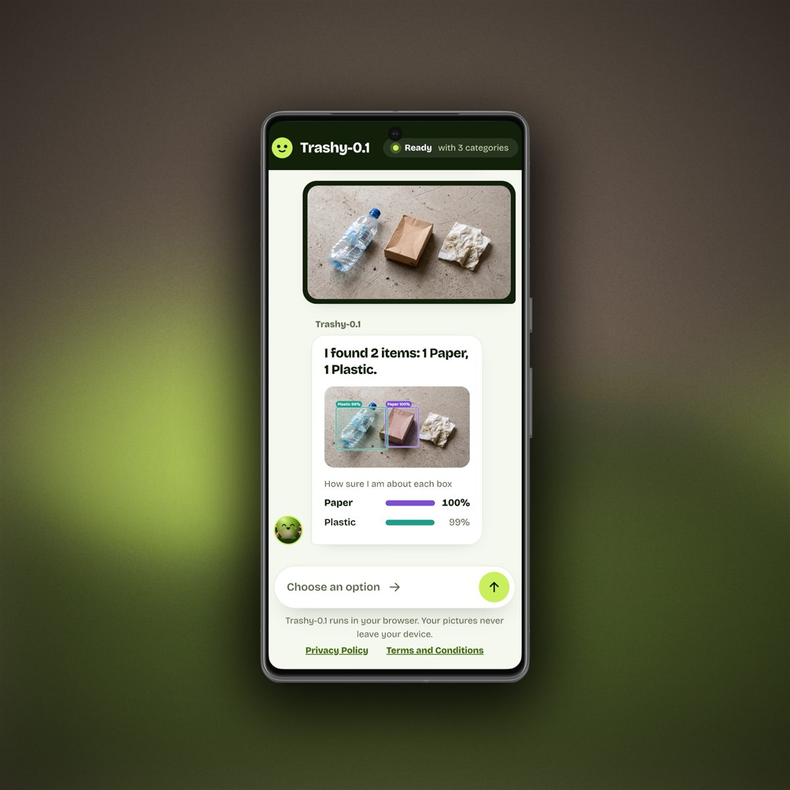

Learn visual features
A pre-trained image model turns each photo or image crop into a compact numerical representation.
Trashy-0.1 explores how AI can help automate garbage sorting and make caring for our environment more engaging. The long-term goal is a smarter, simpler path from everyday waste to the right place.

Trashy compares visual patterns in a picture with examples it has learned from. The current model uses a pre-trained image network to turn images into features, then matches those features to its waste categories.
A pre-trained image model turns each photo or image crop into a compact numerical representation.
Trashy compares a new image with examples in its trained categories and estimates which category is the closest match.
More varied, accurately labelled examples can help the model handle different objects, lighting, backgrounds, and camera angles.
Sorting waste takes attention, and packaging or local rules can be confusing. AI could help identify items and support more automated sorting, while friendly, engaging tools can encourage people to pay attention to waste, recycle thoughtfully, and care for the environment.
Community datasets can make the model more useful across the objects and conditions people encounter in real life. I’m looking for garbage and recyclable item images with clear category labels. A mix of everyday objects, backgrounds, lighting, and viewpoints is especially helpful.
If you have a dataset to share or want to contribute images, please get in touch with me. Please only share images you have the right to share, and remove personal or identifying details where possible. :D (Email: alexej.ryabenkostalk41@gmail.com)
